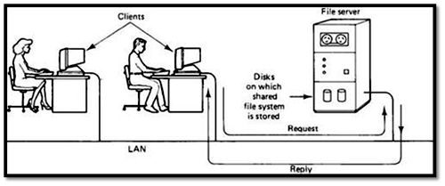

This sort of system is usually employed in case of cloud and distributed environment. In this sort of operating system, an operating creates a virtual machine image for guest computer and this serves a source to operate multiple virtual machines.
In the distributed and cloud computing context of an OS, templating refers to creating a single virtual machine image as a guest operating system, then saving it as a tool for multiple running virtual machines. The technique is used both in virtualization and cloud computing management, and is common in large server warehouses.
